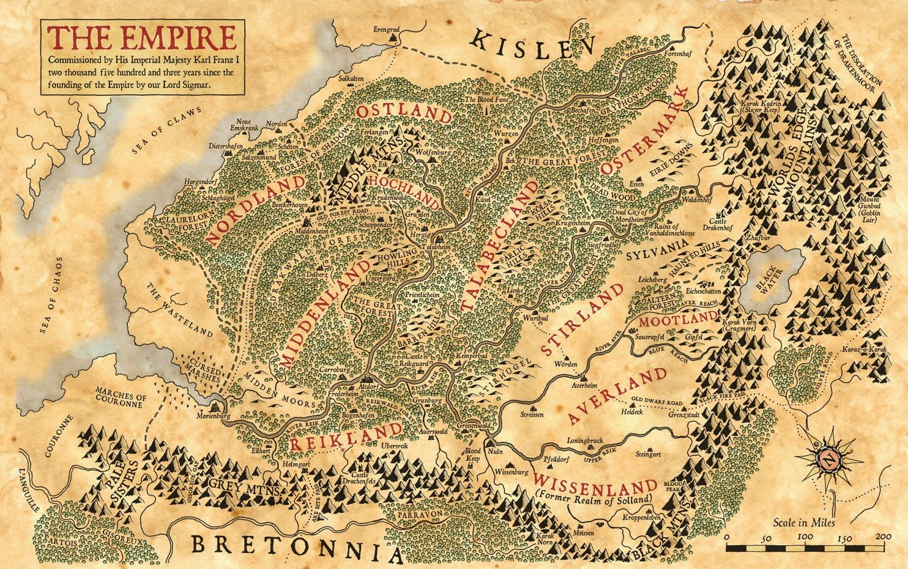

Karl Franz is the ruler of the Empire of Man which is a collection of feudal states all ruled over by a electoral monarchy located in the heart of the Old World.
After a close vote Karl Franz was elected to power in the year 2502 of the Imperial Calender, suceeding his father Luitipold. The early years of his reign were spent eradicating threats that were allowed to flourish due to Luitipold's failing health. Franz dealt with these surperbly in a campaign that began to be likened to Sigmar's campaign to unite the empire in the first place. This camparison that was cemented when Franz's campaign culminated in the battle of Blackfire Pass, near the same location of Sigmar's final battle, resulting in Karl Franz earning the title of "Sigmar's Heir". By the time Franz's campaign came to an end most of the elector counts that opposed his accension to the throne now supported him, securing his throne and finally allowing him to help the other human kingdoms located in the Old World. He reigns from the capitol Altdorf to this day.